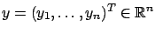
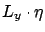
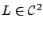
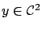
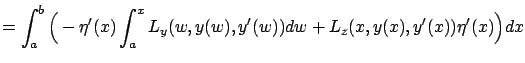
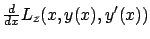

Next: 2.3.4 Two special cases
Up: 2.3 First-order necessary conditions
Previous: 2.3.2 Historical remarks
Contents
Index
2.3.3 Technical remarks
It is straightforward to extend the necessary condition (2.18)
to the multiple-degrees-of-freedom setting, in which

.
The same derivation is valid, provided that
 and
and  are interpreted as gradient vectors of
are interpreted as gradient vectors of  with respect to
with respect to  and
and  , respectively, and by products of
vector quantities (such as
, respectively, and by products of
vector quantities (such as

) one means inner products
in
 .
The result is the same Euler-Lagrange equation (2.18), which is now
perhaps easier to apply and interpret if it is written componentwise:
.
The result is the same Euler-Lagrange equation (2.18), which is now
perhaps easier to apply and interpret if it is written componentwise:
Returning to the single-degree-of-freedom case, let us examine more carefully under what differentiability assumptions our derivation of the Euler-Lagrange equation is valid.
We applied Lemma 2.1 to the function  given by the expression inside the large parentheses in (2.16), whose second term is shown in more detail in (2.19). In the lemma,
must be continuous.
The appearance of second-order partial derivatives of
in (2.19)
suggests that we should assume
given by the expression inside the large parentheses in (2.16), whose second term is shown in more detail in (2.19). In the lemma,
must be continuous.
The appearance of second-order partial derivatives of
in (2.19)
suggests that we should assume

.
Somewhat more alarmingly, the presence of the term
 indicates that we should assume
indicates that we should assume

, and not merely
 as in our original formulation of the Basic Calculus of Variations Problem. Fortunately, we can avoid making this assumption if we proceed more carefully, as follows.
Let us
apply integration by parts to the first term rather than the second term on the right-hand side of (2.14):
as in our original formulation of the Basic Calculus of Variations Problem. Fortunately, we can avoid making this assumption if we proceed more carefully, as follows.
Let us
apply integration by parts to the first term rather than the second term on the right-hand side of (2.14):
 |
 |
|
| |
 |
|
where the last term again vanishes for our class of perturbations  . Thus an extremum
must satisfy
. Thus an extremum
must satisfy
 |
(2.21) |
We now need the following modification of Lemma 2.1.
![\begin{Lemma}
If a continuous function $\xi:[a,b]\to\mathbb{R}$\ is such that
\b...
...{R}$\ with
$\eta(a)=\eta(b)=0$, then $\xi$\ is a constant function.
\end{Lemma}](img406.gif)
From (2.22) and Lemma 2.2 we obtain that along an optimal curve we must have
 |
(2.22) |
where  is a constant. It follows that the derivative
is a constant. It follows that the derivative

indeed exists and equals
 , and we do not need to make extra assumptions to guarantee the existence of this derivative. In other words, curves on which the first variation vanishes automatically enjoy additional regularity. Thus for the necessary condition described by the Euler-Lagrange equation to be valid,
it is enough to assume that
and
, and we do not need to make extra assumptions to guarantee the existence of this derivative. In other words, curves on which the first variation vanishes automatically enjoy additional regularity. Thus for the necessary condition described by the Euler-Lagrange equation to be valid,
it is enough to assume that
and
 . The integral form (2.23) of the Euler-Lagrange equation actually applies to extrema over
piecewise
. The integral form (2.23) of the Euler-Lagrange equation actually applies to extrema over
piecewise
 curves as well, although we
would need a more general version of Lemma 2.2 to
establish this fact.2.2 The
assumption on
can be further relaxed; note, in particular, that the partial derivative
curves as well, although we
would need a more general version of Lemma 2.2 to
establish this fact.2.2 The
assumption on
can be further relaxed; note, in particular, that the partial derivative  did not appear anywhere in our analysis.
did not appear anywhere in our analysis.
It can be shown that the Euler-Lagrange equation is invariant under arbitrary
changes of coordinates, i.e., it takes the same form in
every coordinate system. This allows one to pick convenient coordinates
when studying a specific problem. For example,
in certain mechanical problems it is natural to use polar coordinates;
we will come across such a case in Section 2.4.3.
Next: 2.3.4 Two special cases
Up: 2.3 First-order necessary conditions
Previous: 2.3.2 Historical remarks
Contents
Index
Daniel
2010-12-20